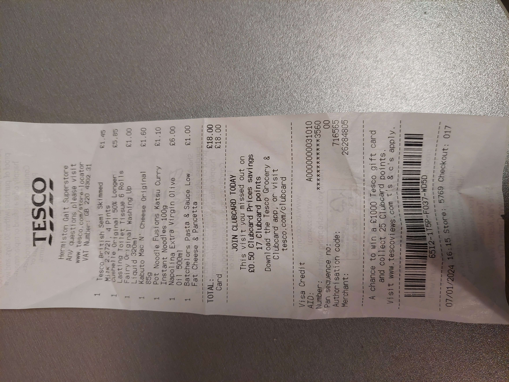

Bonjour vous !
Pour commencer, laissez-moi vous dire que cette journée a été d'une longueur exceptionnelle et pleine de rebondissements.
Petit message avant de commencer: Mon téléphone et mon PC ne s'étant pas mis à l'heure, toutes les heures que je donnerai ici, si je ne précise pas, seront en heure française UTC+1. Oui je fais toutes les conversions à la main.
Donc cette journée commence tôt. En fait elle ne commence même pas je m'explique: je devais me réveiller a 5H mais j'étais stressé. De ce fait, jusqu'à 2H30 du matin je n'ai pas réussi à aller me coucher et de 2H30 à 5H je n'ai pas réussi à sombrer dans le sommeil. J'ai quand même passé ces deux heures allongé les yeux fermés mais j'étais toujours conscient et toujours stressé.
Le planning n'était pas compliqué: dusse tout se dérouler comme prévu, 7H30 arrivée à l'aéroport, 9H15 début de l'embarquement, 9H30 fermeture de la porte d'embarquement et 9H50 décollage. Spoiler: RIEN ou presque ne va se passer comme prévu.
Comme prévu, ma famille et moi arrivons vers 7H30 à l'aéroport. J'enregistre mes bagages, on va prendre pour 100€ de £ (anglaises car ils n'avaient plus d'écossaises) au bureau de change (apprennant au passage que les £ anglaises et écossaises sont différentes mais toutes deux valables) et on va se prendre une petite bouffe. Voilà c'est le "ou presque" de la phrase d'un peu avant donc, à partir de là, tout part en couilles.
D'abord, Cyril, avec qui je devais partir, arrive à 8H40 car son père, peu habitué à venir à Roissy, est ressorti 3 fois du parking par erreur. Bon ok ça nous met un poil dans le mal je vous l'accord mais si tout le reste se passe sans accro ça devrait aller ne pensez-vous pas ? C'est ce que je pensais mais ce n'était que le début des "accros"...
L'épreuve suivante se présente sour la forme d'une grosse machine qui a récemment débarqué dans les aéroports. Première fois que je l'ai vue et je la déteste déjà celle-la... Le principe est simple: On rentre dans le sas, on scan notre passeport, on regarde là où ils nous demandent et tadam on passe. La première fois, la machine, après quelques temps de réflexion, me dit de faire demi tour. En sortant, la dame qui s'occupait de ça me dit "ho c'est rien retournez-y". La deuxième fois tout se passe pareil excepté la procédure la première fois il m'a fait regarder trois points et là genre un de mémoire ? La troisième fois pareil mais, cette fois ci, la dame n'a pas le temps de me renvoyer dedans que son supérieur m'intercepte, dit à la dame que quand ça passe pas faut envoyer les gens à la reconnaissance manuelle et me mène "vers la fin de la queue car vous avez déjà attendu pour la machine". Il était 9H11 quand la machine m'a tej pour la troisième fois. Il était environ 9h14 quand je suis arrivé devant le flic qui faisait la reconnaissance. Heureusement, il était infiniment plus compétent que cette maudite machine et, malgré le fait qu'il ai dû scanner mon passport 3 fois lui aussi, il m'a fait passer en un temps record.
Épreuve suivante: la douane des objets là où on doit mettre ses affaires dans des bacs. Le type qui gérait les bacs devait particulièrement me détester car il m'empêchait de mettre mes bacs si bien que mes 4 bacs ont mis une éternité à passer (le temps de passer 3/4 personnes à chaque autre place que la mienne). D'ailleurs, j'ai dû forcer quand il avait le dos tourner sinon il ne m'aurait jamais laissé passer. Quand je suis enfin arrivé de l'autre côté, même la policière qui confisquait les objets était choquée du temps qu'ils m'ont retenus. Elle m'a dit "Ha ba enfin on vous attendais !" avec mon premier bac entre les mains. Mon second était à peine plus loin que les plexiglass, mon troisième à peine sorti de la machine et mon quatrième toujours au point de départ. Je me suis excusé et expliqué en vitesse, elle a demandé à fouiller ma valisette, j'ai dit oui, elle m'a confiqué un petit ciseau neuf que j'avais oublié dans une trousse de toilette ou truc du genre et le temps de la fouille j'ai rapidement attrapé toutes mes affaires puis je suis parti à toute allure. Il était 9H39 vous comprendrez donc ma panique.
Dernière épreuve de cet arc narratif: ma porte est tout au fond. J'essaie de l'atteindre vite mais rien ne va: mes valises me ralentissent, mes chaussures ne sont pas faites pour courir, mes sacs me frappent, mes affaires sont lourdes et pas toutes bien remises bref je vous laisse imaginer le pitoresque de cette scène. En plus de tout ça, Cyril, qui n'a pas subi de discrimination à la douane, avait disparu depuis un moment (il m'avait attendu pour le passeport et tout mais là on n'est pas passés à la même douane et on s'est perdus de vue).
9H43: j'arrive à ma porte. Le guichetière me dit que l'avion est en retard, que personne n'a encore embarqué et tant mieux car il y avais encore des gens devant moi (et derrière aussi je crois). Je passe, je retrouve Cyril qui, comme il ne me voyait pas, pensait que j'avais déjà embarqué et à partir de là, l'enchaînement de malheurs se transforme en enchaînement de bonheurs.
10H02: On se pose enfin dans l'avion. 10H20: Décollage. Pendant le vol: On nous a offert des petits sablés et une petite boisson (genre eau, jus ou café; j'ai pris de l'eau) c'était agréable. 11H57: Atterissage très réussi (la dernière fois que j'ai pris l'avion on avait fait 3 rebonds à l'atterissage et en général on le sent bien mais là on ne l'a quasiment pas senti du tout). 12H12: Enfin dans l'aéroport d'arrivée, je fonce aux toilettes qui, par miracle, sont très propres (je me retenais depuis avant même l'arrivée de Cyril car les toilettes en France étaient bouchées ou noires de merde et dans l'avion on a parlé et le temps a filé si vite que je ne l'ai même pas vu passer). Bon ensuite je dois bien avouer que les bagages ont mis du temps à arriver donc quand je disais "que du bonheur" il y avait juste cette petite nuance mais bon à 13H17 la livraison a commencé et à 13H26 c'était réglé.
Ensuite vient l'étape du taxi: moyen de transport qui nous avait été recommandé pour atteindre l'université. On arrive et une dame nous aborde pour nous demander où nous allons: "Heriot Watt's main reception". Elle nous demande un nom mais j'hésite n'arrivant pas à prononcer mon prénom ou mon nom français avec un accent suffisant, elle finit pas juste mettre "pax" histoire de. On monte ensuite dans le taxi qui avait un accent tel que, encore aujourd'hui après avoir parlé à pas mal d'Écossais, je n'ai nulle part entendu pire. On ne comprenait quasiment rien. Du peu que j'ai compris, il voulait nous emmener à l'hôtel à côté d'Heriot Watt (malgré son GPS qui lui disait d'aller jusqu'au bout) mais on a fini par se faire comprendre et il nous a menés à bon port. Au moment de diviser l'addition, le taxi n'a pas compris et m'a tout facturé mais bon 21£ on s'en remettra...
En arrivant à la réception, on fait la rencontre de français: Celio, Louis et le père de ce dernier. On les ajoute au plus vite au discord (qui est devenu très actif dès la veille, on ajoute Louis quasi immédiatement et Celio quelque dizaines de minutes plus tard). Par pure coïncidence, Celio est dans mon bloc de chambres (localisé très proche, partageant la cuisine). Cyril quant à lui est 3 étages au dessus de moi. Louis est entre les deux il me semble.
Je commence donc à m'installer vers 14h27. Celio m'avait proposé qu'on s'installe puis qu'on se retrouve avec Cyril pour aller faire nos premières courses. Je m'installe rapidement, je toque: il est torse nu. Du coup on repousse un peu la réunion XD. Notre cuisine étant vérouillée, je vais chercher reslife à 15H17 qui, chance pour moi, est non seulement dans mon bâtiment mais en plus juste 1 étage en dessous du miens. Ils ouvrent la cuisine et me disent de ne pas scanner nos cartes en attendant que ce soit reconfiguré (ce sont de nouvelles serrures). En entrant dans la cuisine, je me rend compte qu'il n'y a pas grand chose: pas de micro ondes, pas de savon, pas de liquide vaisselle, ... Je met mon premier post-it sur la porte pour transmettre les instructions de reslife puis je mange la blanquette toute faite qui faisait partie des aliments que j'avais amenés (que je fais cuire au bain mary faute de micro ondes).
D'un autre côté, pour me connecter au wifi Glide, reslife me conseille de leur écrire par mail car ils répondent très vite et d'utiliser le wifi eduroam pour envoyer ce mail (auquel je n'avais pas accès non plus d'ailleurs car il me manquait encore un compte quelque part...).
À 15H36, comme je n'arrêtais pas de parler de Cyril et de mentionner Celio sur le discord, ce dernier a été renommé Cyril. La confusion a vite été résolue mais j'écris ça pour montrer la particularité de mon lien avec ces deux là à ce moment là.
À 15H56, Celio et moi sommes prêts à rejoindre Cyril pour aller faire des courses.
16H05: On prend le bus direction Tesco pour aller faire nos courses. J'achète du liquide vaisselle, de la nourriture, DU LAIT et du PQ notamment. Petit fait amusant: dans cette contrée l'unité du volume est la pinte (bon ils utilisent le litre aussi parfois mais rarement). J'ai donc pris un bidon de 4 pintes de lait (qui m'aura duré 3 jours). J'ai mis ce premier liquide vaisselle à disposition de la cuisine en contrepartie de quoi Celio a mis à disposition quelque bière pour faire connaissance le premier jour et des steaks qu'on a achetés par deux car ils étaient moins chers comme ça. Malheureusement, je ne trouve pas de masque de nuit pour lutter dans ce pays qui ne connait pas les volets... Résultat des courses: 18£ tout pile. Facture en fin de blog.
À 18H30, les choses prennent un tournant quelque peu innatendu. Vous vous souvenez de ces bières que Celio a achetées pour faire connaissance ? Et bien on se réunit dans la cuisine et on appelle tout le monde notamment grâce au serveur et, petit à petit, les gens commencent à venir. Au début nous sommes 4: Celio, moi et deux autres épitéens qui passaient par là. À la fin nous sommes plus d'une dizaine. Rassurez-vous tout de suite: nous n'avons pas beaucoup bu. Moi par exemple, je n'ai même pas fini une seule bière. Par contre nous avons bien fait connaissance et on en a profité pour organiser notre cuisine: post-its, savons, liquide vaisselle, détermination et marquage de ce que font la plupart des boutons non marqués, rangement de nos achats, nettoyage de notre vaisselle, ... Nous avons aussi rencontré à cette occasion quasi tous les malaysiens avec lesquels nous partageons la cuisine et avons fait connaissance avec eux aussi.
À 19H30, on décide d'aller se faire un petit MacDo pour bien clore la soirée. A la sortie de la cuisine, nous sommes 13 mais deux nous quittent immédiatement (Louis et Camille de mémoire). Une fois arrivés au DoMac en bus, l'un d'entre nous part direct après manger et les 10 restants ont traîné puis se sont promenés avant de rentrer. Cette petite soirée à permis de bien faire connaissance entre épitéens, de tuer dans l'oeuf tout conflit naissant et de mettre une véritable unité entre nous c'était très agréable. Lorsqu'on est rentrés, il était à peu près minuit.
Après cette longue journée, je me suis préparé pour demain (configurer mon compte teams de l'université, mon compte glide, chargé mon tel, installé mon rideau de douche, préparé ma seconde paire de chaussures etc...) puis je suis allé me coucher.
La facture promise:
